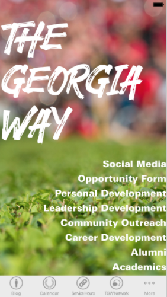

PROJECTS

Internship Projects
Grouper


Grouper is an iOS app I created for my internship at The Climate Corporation. I built this app from scratch using Swift and an internal API used within Climate in order to manage feature flags for Climate's app, FieldView. The purpose of this app was to make it easier to manage feature flags with the implementation of a better user experience. Lots of design decisions were made, and I learned a lot about iOS programming and UX design decisions along the way. At the end of my internship, I was able to run Grouper through Fabric and out to production as a downloadable app. Because of this, Grouper is now used internally by the company in order to more easily manage feature flags, saving time and money because of this more efficent process.
Home Delivery Map Application

The Home Delivery Map Application is a web app that I made during my internship at The Home Depot. This web application used Google Maps to visualize the starting points and destinations for all of the delivery trucks for The Home Depot. The visualization allowed users to see the routes that the trucks were taking, as well as more information about the certain routes when the user hovered over the beginning mark, the route line, or the destination pin. The user was also able to filter out the routes using drop down menus at the top of the application in order to see only the routes that they want. This application is now in production and used internally on the Home Delivery team, especially for their Project Managers, in order to help visualize the delivery truck process to clients and other coworkers.
Class Projects

Moodflix
Moodflix is a web application I created in my Global Information Systems class at UGA. Given a team, we were required to complete a term project that involved some sort of crowdsourcing. As a group, we came up with Moodflix. Moodflix allows the user to type in any movie to "Moodify" it, which then returns a percentage of emotions felt by watchers of the movie. For instance, Toy Story 3 may have 40% sad emotions and 50% happy emotions, and less than 5% disgusted emotions, along with other emotions. We took these emotional responses that we obtained and graphed them by their percentage, next to an emoji representing the emotion, in order to present the data in a clean, easily understandable way. In order to accomplish this, we used the Twitter, NYT Movie Reviews, and IBM Watson APIs in order to crowdsource information from tweets and movie reviews relating to the movie, and insert the text into the IBM Watson API that was able to give us feedback on the percentage of emotions felt in response to the movies by real people.
UGAACM.com
As a part of my leadership with the Associaton of Computing Machinery at UGA, I took it upon myself to create a website for our chapter in order for students to have easy access to all of our events. On this website, a student would be able to see our upcoming events on the calendar, subscribe to our email, see when our Special Interest Groups meet, and more!
eVote System
In my Software Engineering class, our term project was to create an eVote System that utilized a number of Computer Science concepts: servlets, databases, cookies, and more. Our system was designed to allow a user to sign up as either a voter or an elections officer (with the right credentials), and keep track of each user and their persisting data. A voter was allowed to create and log into his or her account, and see the upcoming polls and elections, and which ones they were allowed to vote on, given the date and their zip code. If these fell in order, the voter was allowed to vote on the given ballot, and see real-time results from every voter who voted on the ballot. As for the elections officers, the system was designed to allow them to log in and create ballots, including polls and elections, and set the date they want the ballot to start and finish, as well as what zip code the ballot will be available for. This information was designed to be updated in real time, so when the elections officer finishes creating the ballot, the voter can see the upcoming ballot on their end.
New Media Projects
The Georgia Way
In my New Media Capstone class, I formed a team with four of my peers, and were assigned a client: The UGA Athletic Association. The UGAAA wanted an app that would encapsulate the mission of The Georgia Way. This mission is the opportunity to provide resources and information to past, present, and future collegiate athletes to prepare them for a life after athletics. The Georgia Way app is a multipurpose platform designed for student athletes to connect with alumni through The Georgia Way Network, access academic resources through opportunity forms and tutoring sign-ups, and more. Find out more at thegeorgiaway.mynmi.net!
Lazy Day App